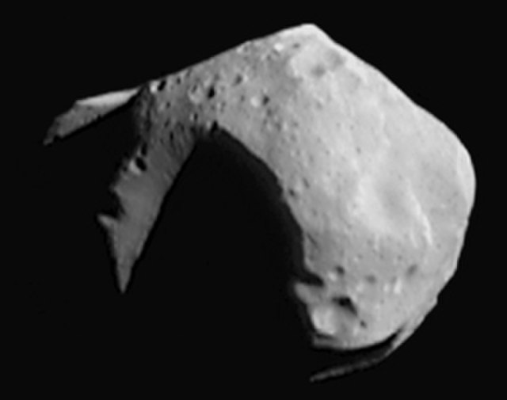

The Sun is the center of our solar system and contains 99.8% of its total mass. Its gravity keeps all the planets, moons, and smaller objects in orbit, and its light and heat make life on Earth possible. The Sun is a middle-aged star, constantly fusing hydrogen into helium in its core, powering the solar system with energy.

Mercury is the closest planet to the Sun and is a small, rocky world with extreme temperatures. Days can reach 800°F (427°C), while nights drop to −330°F (−201°C). It has almost no atmosphere, which allows these dramatic temperature swings.

Venus is a rocky planet with a thick, toxic atmosphere of carbon dioxide and clouds of sulfuric acid. Surface pressures are 90 times stronger than Earth’s, and it rotates in the opposite direction of most planets, so the Sun rises in the west.

Earth is the only planet known to support life, thanks to its liquid water, breathable atmosphere, and protective magnetic field. About 71% of its surface is covered by oceans, and its climate and rotation create diverse habitats for millions of species.

Mars is the red planet, known for its iron-rich soil and massive volcanoes, including Olympus Mons, the tallest volcano in the solar system. It has seasons, polar ice caps, and evidence that liquid water may have existed in the past. Mars has two small moons: Phobos and Deimos.





The asteroid belt lies between Mars and Jupiter and contains millions of rocky bodies. Most are small, irregularly shaped, and leftover building blocks from the early solar system that never formed into a planet. The asteroids vary in size from tiny rocks to ones big enough to be considered dwarf planets like Ceres.